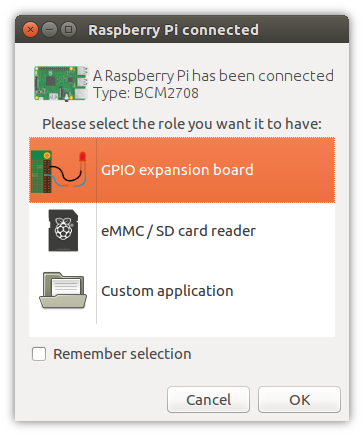
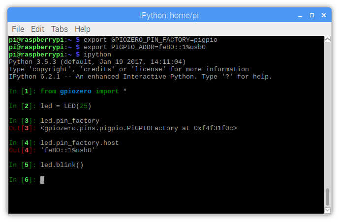

6. Pi Zero USB OTG
The Raspberry Pi Zero and Pi Zero W feature a USB OTG port, allowing users to configure the device as (amongst other things) an Ethernet device. In this mode, it is possible to control the Pi Zero’s GPIO pins over USB from another computer using the remote GPIO feature.
6.1. GPIO expander method - no SD card required
The GPIO expander method allows you to boot the Pi Zero over USB from the PC, without an SD card. Your PC sends the required boot firmware to the Pi over the USB cable, launching a mini version of Raspberry Pi OS and booting it in RAM. The OS then starts the pigpio daemon, allowing “remote” access over the USB cable.
At the time of writing, this is only possible using either the Raspberry Pi Desktop x86 OS, or Ubuntu (or a derivative), or from another Raspberry Pi. Usage from Windows and Mac OS is not supported at present.
6.1.1. Raspberry Pi Desktop x86 setup
Download an ISO of the Raspberry Pi Desktop OS from raspberrypi.org
Write the image to a USB stick or burn to a DVD.
Live boot your PC or Mac into the OS (select “Run with persistence” and your computer will be back to normal afterwards).
6.1.2. Raspberry Pi setup (using Raspberry Pi OS)
Update your package list and install the
usbbootguipackage:
$ sudo apt update
$ sudo apt install usbbootgui
6.1.3. Ubuntu setup
Add the Raspberry Pi PPA to your system:
$ sudo add-apt-repository ppa:rpi-distro/ppa
2. If you have previously installed gpiozero or pigpio with pip,
uninstall these first:
$ sudo pip3 uninstall gpiozero pigpio
Install the required packages from the PPA:
$ sudo apt install usbbootgui pigpio python3-gpiozero python3-pigpio
6.1.4. Access the GPIOs
Once your PC or Pi has the USB Boot GUI tool installed, connecting a Pi Zero will automatically launch a prompt to select a role for the device. Select “GPIO expansion board” and continue:


It will take 30 seconds or so to flash it, then the dialogue will disappear.
Raspberry Pi OS will name your Pi Zero connection usb0. On Ubuntu, this will
likely be something else. You can ping it using the address fe80::1%
followed by the connection string. You can look this up using ifconfig.
Set the GPIOZERO_PIN_FACTORY and PIGPIO_ADDR environment
variables on your PC so GPIO Zero connects to the “remote” Pi Zero:
$ export GPIOZERO_PIN_FACTORY=pigpio
$ export PIGPIO_ADDR=fe80::1%usb0
Now any GPIO Zero code you run on the PC will use the GPIOs of the attached Pi Zero:


Alternatively, you can set the pin factory in-line, as explained in Configuring Remote GPIO.
Read more on the GPIO expander in blog posts on raspberrypi.org and bennuttall.com.
6.2. Legacy method - SD card required
The legacy method requires the Pi Zero to have an SD card with Raspberry Pi OS inserted.
Start by creating a Raspberry Pi OS (desktop or lite) SD card, and then configure the boot partition like so:
Edit
config.txtand adddtoverlay=dwc2on a new line, then save the file.Create an empty file called
ssh(no file extension) and save it in the boot partition.Edit
cmdline.txt`and insertmodules-load=dwc2,g_etherafterrootwait.
(See guides on blog.gbaman.info and learn.adafruit.com for more detailed instructions)
Then connect the Pi Zero to your computer using a micro USB cable (connecting
it to the USB port, not the power port). You’ll see the indicator LED flashing
as the Pi Zero boots. When it’s ready, you will be able to ping and SSH into it
using the hostname raspberrypi.local. SSH into the Pi Zero, install pigpio
and run the pigpio daemon.
Then, drop out of the SSH session and you can run Python code on your computer to control devices attached to the Pi Zero, referencing it by its hostname (or IP address if you know it), for example:
$ GPIOZERO_PIN_FACTORY=pigpio PIGPIO_ADDR=raspberrypi.local python3 led.py